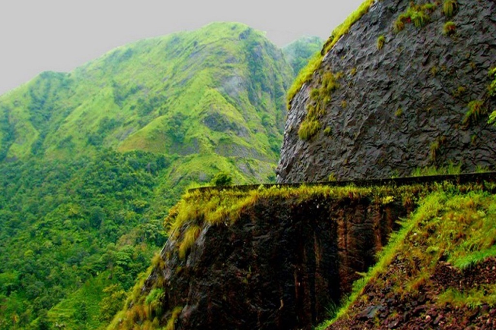

POINTS OF INTEREST

MEESAPULIMALA
Meesapulimala is the second highest peak in the Western Ghats and the trekking path is through the Rhodo Valley.

VAGAMON
Vagamon is a magical land replete with rolling hills, lush meadows, rustic hamlets and spawling pine valleys. It is an ideal destination to escape into nature.

THEKKADY
With its lush green hills, spice-scented plantations and rare flora and fauna, Thekkady is considered to be one of the much sought after destinations in Kerala.
CHITHIRAPURAM
Chithirapuram is a hill town known for its tea plantations and is the home of PallivasalHydel power project of Kerala.
CHINNAR WILDLIFE SANCTUARY
It is an ideal place for trekking and is also the habitat of the endangered Giant Grizzled Squirrel of India.